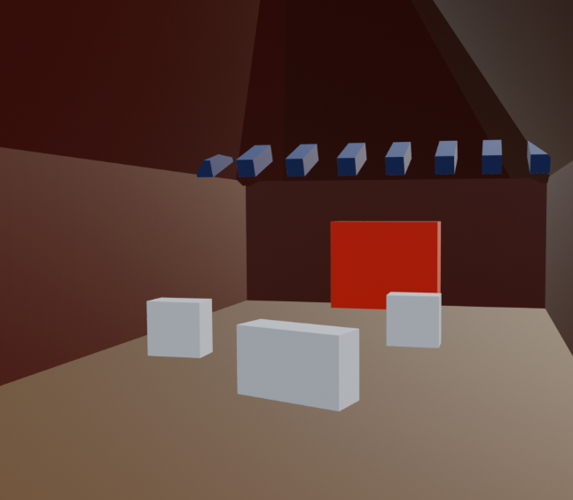
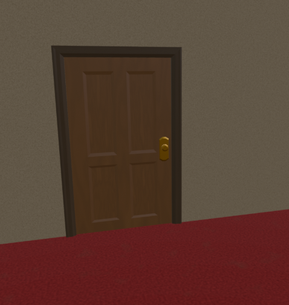
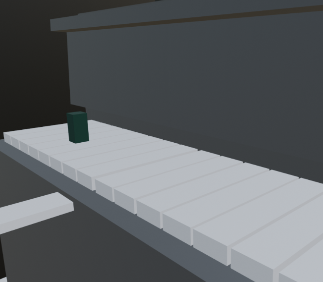
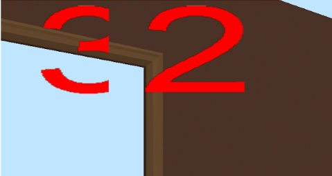

Out of Tune: Weekly Progress Report Week 6 5/5
Group Status
Model export pipeline set up and tested so now we can export the models, textures, and collision boxes without worry and continue creating models. We currently got a room setup being rendered within the game with lighting and the physics engine is as of now in a relatively completed state that its ready to be incorporated into the various minigame and final door aspects of the game that has undergone development this week. Various audio resoruces for the game, mofits and sound effects have been created and will hopefully be incorporated.
Screenshots
Group Morale
Overall the group morale is quite positive this week. It is nice seeing things come together, and everyone seems to be working very smoothly together as a team. The major pieces are fitting into place, so progress should hopefully continue to pick up speed.
Individual Reports
Art (Jasmine):
What were your contrete goals for the week?
My goals were to graybox all the rooms for the game and clean up/finish textures for the hotel rooms. I also wanted to finish the hotel room models and collision boxes for those.
What goals were you able to accomplish?
I finished all of my goals for this week, I think textures are still subject to change but are at least good enough to use if I decide not to change them later. I was able to clean up and send all the hotel room pieces EXCEPT for the main lobby but I think I can finish that very soon. I also added collision boxes for the physics and it looks like the physics team was able to use them so I will keep using this pipeline. I also did a quick graybox of the remaining game rooms so that the minigames team can give me feedback on the overall idea before I start working on it. It was really useful to have the graybox to make sure we considered everything and have the same idea in our heads.
If the week went differently than you had planned, what were the reasons? note that this happens regularly…I would prefer you to be aggressive in what you want to try accomplish rather than limit yourself to goals you know you’ll easily achieve. so answering this question is more of a reflection on the development process and the surprises you encounter, it’s not at all an evaluation.
This week actually was very productive for me, I even worked on the characters a little (this was really hard). I want to keep this momentum up so that we can get everything in the engine for each team to use asap.
What are your specific goals for the next week?
This week I want to finish the lobby room for sure and make that a priority. Maybe I’ll make the keys this week also. Next I want to focus on the swamp room and work on the character models. I want to work a little on the character models throughout the rest of the quarter each week along with my other work because I think it will be a long learning process with a lot of redoing/trying different methods that I don’t wanna rush at the end of the quarter.
What did you learn this week, if anything (and did you expect to learn it)?
I learned a lot about making humanoid shapes just by trial and error and I’m still not exactly sure how I want to go about it but I’m trying a lot of things. I’m still constantly learning about textures and materials and how exporting that works since I keep running into small issues with it. Other than that, most of what I worked on was not new to me.
What is your individual morale (which might be different from the overall group morale)?
I am still very hype about the project and very proud of my progress this week. Seeing my models in our engine and especially with the lighting Julie added was really cool. It’s also exciting to get to show off everything I make to my team and motivates me to produce more for our game.
 
Music (Annie):
What were your contrete goals for the week?
Try to implement in audio into the game engine
What goals were you able to accomplish?
I’m able to get the SFX for unlocking the door. I also did drafted motifs/notes that will be display on the final door. You can listen to them in the gallery tab.
If the week went differently than you had planned, what were the reasons? note that this happens regularly…I would prefer you to be aggressive in what you want to try accomplish rather than limit yourself to goals you know you’ll easily achieve. so answering this question is more of a reflection on the development process and the surprises you encounter, it’s not at all an evaluation.
I thought I would have time to implement it in audio but I was busy working on other projects.
What are your specific goals for the next week?
Start drafting theBGM for the circus/carnival room
What did you learn this week, if anything (and did you expect to learn it)?
I was learning how to modify the C-Make so that I can import the FMOD C++ library into the repo safely.
What is your individual morale (which might be different from the overall group morale)?
I feel like I could have done more because I have been busy last week. But I feel reassured about my group's overall progress because it gives me more ideas of what audio to include into the game. Since the scene looks pretty solid, I feel like I could easily get started on testing audio.
Graphics (Gabriel):
What were your contrete goals for the week?
My concrete goals were:
- Add UI support for the graphics engine
- Get a timer UI element to display the remaining game timer in real time
What goals were you able to accomplish?
I accomplished my first goal, and the second goal is almost done. Although the timer isn’t completed yet, the UIElement class it uses is able to dynamically update its displayed number.
If the week went differently than you had planned, what were the reasons? note that this happens regularly…I would prefer you to be aggressive in what you want to try accomplish rather than limit yourself to goals you know you’ll easily achieve. so answering this question is more of a reflection on the development process and the surprises you encounter, it’s not at all an evaluation.
This week went smoothly, although figuring out how to display flat textures took slightly longer than I was expecting. The current issue I’m facing is that PNG transparent backgrounds are “erasing” textures under them instead of showing through.
Other than that I think UI is on a pretty good pace right now.
What are your specific goals for the next week?
- Finish implementing the timer display
- Refactor the UIElement class into an AnimatedUIElement and a StaticUIElement for elements that won’t be updated (texts, fixed images, etc.)
- Create a Canvas class that manages all UI elements on screen.
What did you learn this week, if anything (and did you expect to learn it)?
I learned a bunch about the texture pipeline, especially when it comes to generating textures from files, uploading data to the GPU and storing relevant data into buffers for updates. I also learned how to work with texture atlases in order to dynamically update textures without having to load from different files.
What is your individual morale (which might be different from the overall group morale)?
So far I’m pretty happy with the work we got into UI. Still, I think there’s still a lot to do, and some UI elements like compass and minimap might be a little more challenging than the timer. But I’m looking forward to working on whatever UI our group needs.
General Game Implementation and Mini Games (William):
What were your contrete goals for the week?
Originally it was to continue testing our classes using ASCII, but we are at the stage where we need to start testing using 3D graphics. Instead, I began working on our final room and door class.
What goals were you able to accomplish?
I got sick during the week and didn’t meet up with the team, but I have a general outline of our final door class building on what we discussed previously. Currently working on a local branch, but will push and review with the team on Tuesday.
If the week went differently than you had planned, what were the reasons? note that this happens regularly…I would prefer you to be aggressive in what you want to try accomplish rather than limit yourself to goals you know you’ll easily achieve. so answering this question is more of a reflection on the development process and the surprises you encounter, it’s not at all an evaluation.
Other than getting sick, not too many hiccups this week.
What are your specific goals for the next week?
As a team we’ve been integrating everything together for the past week. This week I hope to be able to have a proper MVP, with door interactions, key interactions, and movement. It seems our team already has most of the graphics (doors and rooms are objects), physics (bounding boxes for these), and networking implemented, now we just need to add the game logic.
What did you learn this week, if anything (and did you expect to learn it)?
I didn’t learn anything from my own code, but learnt a lot looking at my peers code for client-server communication for our classes. I.e. For efficiency we should consider using different data structures and variable types on the server and on the client side. Had to learn about what was really necessary for each side and how we can structure our code.
What is your individual morale (which might be different from the overall group morale)?
I didn’t really accomplish too much this week, though I also didn’t have a lot of goals. Mainly just wanted to continue implementing our most important object classes. At this point I hope ASCII tests aren’t necessary anymore and we can go ahead with playtesting our game.
General Game Implementation and Mini Games (Ravi):
What were your contrete goals for the week?
My goals for this week were to finish the integration of the `components/` class files, help create the map and add in the logic for it, and help finish minigame 1.
What goals were you able to accomplish?
I was able to finish integration of the components class files and integrate the player struct on the client.cpp file with the player class. This way, we now have the player fully integrated into the server/client now too. I also talked with Helen, Julie, William, and Brandon with some planning of how we will communicate between different parts of the server and physics. For example, how we will know which lilypad was jumped on from physics’ RigidBody of the lilypad, and then how to send that information over to the swamp minigame server logic.
If the week went differently than you had planned, what were the reasons? note that this happens regularly…I would prefer you to be aggressive in what you want to try accomplish rather than limit yourself to goals you know you’ll easily achieve. so answering this question is more of a reflection on the development process and the surprises you encounter, it’s not at all an evaluation.
The week went somewhat rockier than I had planned. The integration of the class files with the client and server took much longer than expected, and the physics/minigame communication solution seemed somewhat inelegant. That said, now we have all of the integration out of the way and I think things will be smoother now. I’m excited to get everything connected to graphics so we can actually start to see the game form.
What are your specific goals for the next week?
My goals are to help complete minigame 1, start minigame 2, and talk with Gabriel about getting the graphics integrated with the component class files.
What did you learn this week, if anything (and did you expect to learn it)?
I learned a lot more about the interaction between physics and other logic on the server. I also learned more about what things need to be done on the client and how the logic and representation of the game state should differ between the server and client.
What is your individual morale (which might be different from the overall group morale)?
I am feeling slightly stressed about how much work is still left, but overall I am feeling good still and I think we will be able to make a good game before the deadline. It’s also exciting to see the lighting, doors, and more things come in.
Physics (Brandon):
What were your contrete goals for the week?
My concrete goals for the week were to finish basic map generation, implement the Blender file processing pipeline for the bounding boxes, and fix the physics bug of teleporting forward every time you jumped.
What goals were you able to accomplish?
I was able to accomplish all my goals. For map generation, I was able to randomly position configurable rooms and then run DFS on each room to find a path to another room. Additionally, I implemented the disjoint set or union-find data structure to track connectivity of rooms in order to ensure all rooms are connected in some way.
For the Blender file processing pipeline, I communicated with Julie extensively to iterate towards a pipeline that is good for both graphics and physics. She had implemented a shared file that outlined the format and dimensions of each object. Although it functionally worked, she had calculated them all by hand by referencing the .obj files, which I believed wouldn’t be scalable and would not be accessible to the other team members who aren’t familiar with .obj files. Considering this, I created a standalone script that reads the .obj file and prints out the dimensions of each Blender .obj file to be used by the layout file, which defines the positioning of the items within a room. Therefore, we have a dimensions file that serves as a lookup for a mesh’s dimensions, and we have a layout file that outlines the room layout.
Lastly, the bug with the teleporting jump was fixed by a return statement. I needed to return after processing a jump so that I wouldn’t add velocity to the facing direction.
If the week went differently than you had planned, what were the reasons? note that this happens regularly…I would prefer you to be aggressive in what you want to try accomplish rather than limit yourself to goals you know you’ll easily achieve. so answering this question is more of a reflection on the development process and the surprises you encounter, it’s not at all an evaluation.
This week definitely could have been a lot lighter if Julie and I were on the same page from the beginning. We communicated a lot about the pipeline and what was necessary for it, and we initially had a disagreement. Eventually, as we understood more about the pipeline and the vision for it, we came to an understanding and implemented the pipeline according to both our needs as graphics and physics people. It was a lot of iteration as we slowly began to understand each other’s code.
What are your specific goals for the next week?
Fundamental physics is essentially done, so my specific goals for next week are to join the overall programming team and help with creating the minigames, especially the unique physics that are associated with the minigames. Additionally, fix any physics bugs that we encounter in play testing.
What did you learn this week, if anything (and did you expect to learn it)?
I constantly keep learning about the importance of communication. It is crucial to be on the same page and to understand all portions of the code. Although the misunderstanding of ideas caused progress to be slow, it was definitely worth it because I actually learned a lot about what it means to do systems programming, and that communication is a large part of it because you won’t be an expert on the entire code base as the code base gets large and the team is big. In terms of technical skills, I learned a little about how to interface with Blender’s .obj files using assimp.
What is your individual morale (which might be different from the overall group morale)?
I am pretty hopeful because progress is going as expected, and I am now mostly free from physics to help out in other areas. I have somewhat been in the dark on the progress of overall programming, so I am excited to see everything integrated and to help them out with that.
General Game Implementation and Mini Games (Helen Lin):
What were your contrete goals for the week?
The goal was to get the swamp class ready. At least the initial setup for the class ready that can provide communication between client and server
What goals were you able to accomplish?
I was able to get client and server communication set up so that on server init the swamp game is initialized on the server side and the game solution and other information is determined. Then added in such that when the server handles the client join it’ll send over a message with all the initial information as of right now that the swamp on the client side needs to know. Also added in a update function into the server tick to help send over game state on server tick. Right now just sending it with every tick.
If the week went differently than you had planned, what were the reasons? note that this happens regularly…I would prefer you to be aggressive in what you want to try accomplish rather than limit yourself to goals you know you’ll easily achieve. so answering this question is more of a reflection on the development process and the surprises you encounter, it’s not at all an evaluation.
Went a little more differently as it felt like a lot of details on implementation that is needed feels unclear and not sure where things should go, which has delayed progress in implementation. We have as a group on the general game implementation as well as in a larger group discussed things like how we plan to handle specific collision responses. Like for the lily game we need to know when the player jumps on to the lily pad, which we think is physics, but then physics also needs to know what is a good or bad pad and then also we need to update the game state. But there is an information disconnect in that in physics it only knows the Rigid Body class (our physics class) and how we communicate from the rigid body when there is a collision to the Swamp class to update the game state.
What are your specific goals for the next week?
Started on incorporating Ravi’s new classes into the swamp mainly object class so I can start also creating the lilypads which are object class. Aiming to get the initial swamp PR in in the next few days then also. The goals is to start creating the objects that should reside in the swamp class both server side and client side. And also hopefully with more communication determine how to handle the player jumping onto the lily pad
What did you learn this week, if anything (and did you expect to learn it)?
Learned and thought more about infrastructure of things and learning and determine what should go where. Which is starting to be a bit more clear as I worked more on the swamp class. Also having to relearn and re think all the various pointer classes and references in c++ to determine what type we want to declare the variable as and store it as. As a pointer or an instance etc.
What is your individual morale (which might be different from the overall group morale)?
It’s cool and amazing seeing the progress in graphics with more of the models coming in. I’m hoping to start seeing more of the mini game come together
Graphics & Network (Julie):
What were your contrete goals for the week?
The main goals for this week were to implement the rigid body pipeline, set up the room layout hierarchically, load models and textures as soon as they’re ready, and add lighting and shadows.
What goals were you able to accomplish?
I accomplished all of my goals this week except for adding shadows.
First, I implemented a game timer on the networking side. Once all four clients are connected, the timer starts ticking and broadcasts the remaining time to each client every second. If a client disconnects, the timer continues running. When all clients disconnect, the timer stops and resets for the next round. It restarts automatically once four clients reconnect. This was implemented using boost::asio::steady_timer, which triggers every second.
Next, I set up a model hierarchy with parent-child relationships. Since our map generation will be dynamic, we needed to treat each room as a self-contained unit. I created a ModelInstance struct that contains a pointer to the model (since some models are reused), a local transform, and links to its parent and children. This allowed each object in a room to be positioned relative to the room itself. When rendering a room, we recursively render all its children, and each child computes its world position based on its parent's transform.
I also loaded the door mesh and textures that Jasmine created.
After that, I added the initial rigid body layout within a room and built a rigid body initialization pipeline. I created a JSON file that defines the bounding box layout for each room. I manually populated this data, and on the server side, I load the file and construct each bounding box in a loop.
Finally, I implemented point lighting and Blinn-Phong shading. I extracted additional material information from the .obj file using Assimp, such as specular reflectivity and shininess. By combining those values with the halfway vector (between light and view directions), I was able to implement Blinn-Phong lighting. I'm still experimenting and refining this part.


If the week went differently than you had planned, what were the reasons? note that this happens regularly…I would prefer you to be aggressive in what you want to try accomplish rather than limit yourself to goals you know you’ll easily achieve. so answering this question is more of a reflection on the development process and the surprises you encounter, it’s not at all an evaluation.
I anticipated that I wouldn't get a lot of coding done this week due to other responsibilities (midterm, tutoring, research, club work, etc.). What I didn't expect, however, was how much time would go into coordinating with Brandon.
Originally, I manually created the JSON file for the bounding box layout within a room. Since the layout was static and Jasmine structured the OBJ files in a consistent format, I could extract the min and max corners very quickly–just by reading the 8 vertex positions. Entering each model's data took less than 10 seconds and required no calculations. The server would then read this file in a loop and construct the rigid bodies accordingly. I thought the process was straightforward and quick, especially since we had to manually define object positions within each room anyway.
Brandon suggested extracting the min and max corners programmatically instead. While I initially felt this added unnecessary complexity and an extra file, we discussed the tradeoffs and various small design details. In the end, we compromised and arrived at a solution that worked for both of us. Although this process took more time than expected, I believe the discussion was important for effective teamwork.
What are your specific goals for the next week?
I'll continue working on soft shadows using Percentage Closer Filtering (PCF). If any emissive objects are ready, I'll extract their emission values and add a bloom effect. I also plan to load more models as they become available. On the networking side, I'll start implementing the lobby page.
What did you learn this week, if anything (and did you expect to learn it)?
This week, I learned how to communicate through disagreements in a supportive and constructive way. The disagreement happened because we both really cared about the project, and talking it through helped us understand each other's perspectives better. I also got to talk a lot with Ravi–we asked each other questions while going through each other's code, and now I feel like I understand the mini-games much better.
What is your individual morale (which might be different from the overall group morale)?
I really appreciate our team–everyone is passionate and supportive, and I feel like we're all learning a lot together through this project. I should have more time this week, so I'm planning to get a lot done.